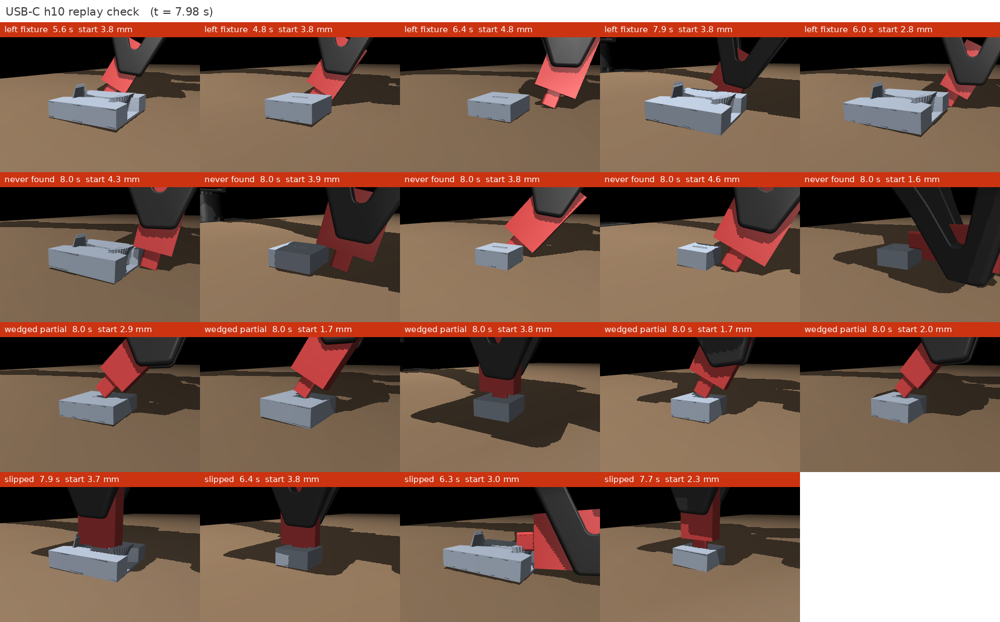

<title>Blind Precise Assembly Reproduction</title>
<meta name="claude:viewport-fit-sides" content="cover">
<meta name="description" content="Blind proprioceptive insertion: a reproduction of Bronars et al. (arXiv:2610.23849) and its extension to the YAM arm and USB-C, organized by research question. ASD-STE100 text.">
<link rel="preconnect" href="https://fonts.googleapis.com">
<link rel="stylesheet" href="https://fonts.googleapis.com/css2?family=Inter:wght@300;400;500;600;700&family=JetBrains+Mono:wght@400;500&display=swap">
<link rel="stylesheet" href="static/css/style.css">
<script type="module" src="static/js/figures/index.js"></script>

<main>

  <!-- ============================================================ hero -->
  <header class="hero">
    <div class="badge">Status report · 23 October 2026 · Simulation results</div>
    <h1>Blind Insertion with Joint Sensing Only<br><span class="sub">From a paper reproduction to USB-C on the YAM arm</span></h1>
    <p class="authors">Yash Chitambar</p>
    <p class="affil">Extends Bronars, Park, Kedia and Agrawal, <i>Blind Precise Assembly: Proprioceptive Sim-to-Real Peg-in-Hole for Diverse Parts</i></p>
    <nav class="links">
      <a class="btn" href="https://arxiv.org/abs/2610.23849">Original paper</a>
      <a class="btn" href="https://younghyopark.me/blind-proprioceptive-assembly/">Original project page</a>
      <a class="btn" href="https://claude.ai/artifact/CjxtoUaw6MhSsYZLwnPVEh">USB-C report</a>
    </nav>
  </header>

  <figure class="teaser">
    <video autoplay muted loop playsinline poster="static/images/yam_hero_poster.jpg">
      <source src="static/videos/yam_hero.mp4" type="video/mp4">
    </video>
    <figcaption><b>The YAM arm puts a peg into a hole with no camera and no force sensor.</b> Top: the full arm on the lab table. Bottom: a close-up of the same episode. The policy did not see these parts in training. ¼ of real time.</figcaption>
  </figure>

  <!-- ============================================================ summary -->
  <section id="summary">
    <h2>Summary</h2>
    <p class="lede">Can a policy that senses only the robot's own joints insert connector-scale parts on a low-cost arm? In simulation, yes: the YAM plugs in a USB-C drive (0.05 mm clearance) on 95% of unseen starts. The real arm's latency is now the main open risk.</p>
    <ol class="facts">
      <li><b>The paper reproduces.</b> Our own code seats 99.9% of unseen pegs (paper: 99.4%). Blind beats the camera on every unseen part family, by 12 to 54 points.</li>
      <li><b>The policy transfers to the YAM, but latency breaks it.</b> 99.8% on the ideal arm. With 20 ms of latency that training did not include, only 16%. Training must include the real latency to within one 20 ms control step. Noise, encoder resolution and backlash up to 5 arcmin do not matter for the peg.</li>
      <li><b>Size does not limit blind insertion. Tight clearance does, a little.</b> Pegs from 60 to 8 mm seat 96 to 99% down to 0.1 mm clearance. At 0.05 mm, two of four sizes lose 3 to 5 points (two seeds). The contact signal does not get weaker as parts shrink.</li>
      <li><b>USB-C works in simulation.</b> The best policy seats 95.3% of unseen drives at 0.02 to 0.1 mm clearance. It seats 50% of drives that start 7 mm from the port.</li>
      <li><b>The contact loss is necessary for small parts.</b> Without it, the USB-C policy seats 10% and its memory holds no contact information. A short history (0.2 s) is better than 0.6 s or 1.2 s.</li>
      <li><b>Most USB-C failures are grasp failures.</b> In 81 of 98 failures, the drive turns more than 15° between the gripper pads. The search itself rarely fails.</li>
    </ol>
    <div class="tbl">
      <table>
        <thead><tr><th>Research question</th><th>Answer in simulation</th><th>Status</th></tr></thead>
        <tbody>
          <tr><td><a href="#rq1"><b>RQ1</b></a> Do the paper's results reproduce?</td><td>Yes: success, speed, generalization, probe, contact loss. A second task (gears) also reproduces.</td><td><span class="chip ok">Done</span></td></tr>
          <tr><td><a href="#rq2"><b>RQ2</b></a> Does it transfer to the 6-joint YAM?</td><td>Yes, if training includes the robot's latency and gains.</td><td><span class="chip ok">Done in sim</span> <span class="chip run">Real arm values needed</span></td></tr>
          <tr><td><a href="#rq3"><b>RQ3</b></a> How does success change as parts get smaller and tighter?</td><td>Size alone: no change. 0.05 mm clearance: −3 to −5 points for some sizes. A larger start area costs the smallest peg up to 10 points.</td><td><span class="chip ok">Done in sim</span></td></tr>
          <tr><td><a href="#rq4"><b>RQ4</b></a> Can a blind policy plug in USB-C?</td><td>Yes: 95.3%. It needs the contact loss and the measured latency.</td><td><span class="chip ok">Done in sim</span> <span class="chip run">Real latency needed</span></td></tr>
          <tr><td><a href="#rq5"><b>RQ5</b></a> Where does a camera help?</td><td>Faster on familiar large pegs, worse on new parts. The YAM wrist camera does not see the USB-C port.</td><td><span class="chip ok">Large pegs</span> <span class="chip todo">USB-C not started</span></td></tr>
        </tbody>
      </table>
    </div>
    <div class="note">
      <p><b>What this means for the real arm.</b> (1) Measure the YAM's latency and joint gains first: they decide if a policy works. (2) Train with the contact loss and a 10-step history. (3) Check the grasp: the drive must not turn in the gripper. (4) Start with a large peg (99.6% in simulation), then go smaller.</p>
    </div>
  </section>

  <!-- ============================================================ approach -->
  <section id="approach">
    <h2>Approach</h2>
    <p>All phases use the same simulation, policy, training and test procedure. Only the robot and the parts change.</p>
    <figure class="viz" data-fig="diagram">
      <div class="viz-tag">Interactive · hover a block</div>
      <div class="viz-mount"></div>
      <figcaption><b>Policy.</b> A temporal convolution network (TCN) encodes the last 30 steps (0.6 s) of joint angles, joint velocities and actions into a 32-value latent. The actor uses the latent and the current step. The amber blocks are for training only: a critic with the true peg pose, and a contact decoder that predicts which edge points touch.</figcaption>
    </figure>
    <ul class="facts">
      <li><b>Simulation.</b> MuJoCo Warp on the GPU, 8,192 to 12,288 worlds in parallel. Physics at 1 kHz, control at 50 Hz.</li>
      <li><b>Action.</b> A joint-target offset that a PD controller holds for 20 ms. The low joint stiffness lets contact forces bend the arm, and the joint encoders sense this.</li>
      <li><b>Training.</b> PPO with a contact-prediction loss. Random parts, fixture pose, grasp, friction and contact stiffness in each episode. Small parts use a clearance curriculum.</li>
      <li><b>Test.</b> 2,048 starts with parts that training did not use, the same starts for every policy, deterministic actions, 95% Wilson intervals (±1 to 2 points).</li>
    </ul>
  </section>

  <!-- ============================================================ RQ1 -->
  <p class="finding">RQ1 · Reproduction</p>
  <section id="rq1">
    <h2>The reproduction matches the paper</h2>
    <p class="claim">The blind policy seats 99.9% of 2,048 unseen pegs (paper: 99.4%). It is faster and moves less than the paper's policy.</p>
    <figure class="viz" data-fig="headline">
      <div class="viz-tag">Interactive · hover a bar</div>
      <div class="viz-mount"></div>
      <figcaption><b>Success on 2,048 matched starts (Flexiv arm, 1.0 to 1.5 mm clearance).</b> Black mark: the paper's value. The spiral search knows the true hole position, so it is an optimistic baseline.</figcaption>
    </figure>
    <div class="tbl">
      <table>
        <thead><tr><th>Metric</th><th class="n">Blind, ours</th><th class="n">Blind, paper</th><th class="n">Camera, ours</th><th class="n">Camera, paper</th></tr></thead>
        <tbody>
          <tr><td>Success rate</td><td class="n">99.9%</td><td class="n">99.4%</td><td class="n">99.95%</td><td class="n">97.2%</td></tr>
          <tr><td>Median time to seat</td><td class="n">0.64 s</td><td class="n">0.80 s</td><td class="n">0.38 s</td><td class="n">0.44 s</td></tr>
          <tr><td>Median lateral travel</td><td class="n">26 mm</td><td class="n">37 mm</td><td class="n">15 mm</td><td class="n">20 mm</td></tr>
        </tbody>
        <caption>Paper Table 5 metrics. Three seeds of each policy agree (blind 99.66 to 99.90%).</caption>
      </table>
    </div>
    <p>The other paper claims also reproduce, each with three seeds:</p>
    <ul class="facts">
      <li><b>Generalization.</b> On six part families that training did not use, the blind policy beats the camera policy in all 18 pairs of seed and family (figure below).</li>
      <li><b>Contact loss.</b> Without it, learning needs 2.2 times as many steps (paper: 2.7).</li>
      <li><b>Memory.</b> A linear probe reads the contact mode from the latent with 70% mean recall (paper: 70%). The current observation alone gives 53%.</li>
      <li><b>Second task.</b> Gear meshing: 99.94% of 8,192 unseen gear sets (paper: more than 99.9%).</li>
    </ul>
    <figure class="viz" data-fig="ood">
      <div class="viz-tag">Interactive · hover a bar</div>
      <div class="viz-mount"></div>
      <figcaption><b>Success on six part families that training did not use (paper Fig. 11).</b> 1,024 starts per bar. Dashed marks: the paper's values.</figcaption>
    </figure>
    <figure class="viz" data-fig="probe">
      <div class="viz-tag">Interactive · hover a bar or a cell</div>
      <div class="viz-mount"></div>
      <figcaption><b>The latent holds the contact state (paper Figs. 10 and 15).</b> (a) Probe recall per contact mode. (b) If a state receives the latent of a different contact mode, the action changes up to 2.2 times as much as for the same mode.</figcaption>
    </figure>
  </section>

  <!-- ============================================================ RQ2 -->
  <p class="finding">RQ2 · Transfer to the YAM</p>
  <section id="rq2">
    <h2>The policy transfers to the YAM, if training includes the robot's latency</h2>
    <p class="claim">On the lab table, the YAM policy seats 99.8% of unseen pegs and learns 2.3 times faster than on the Flexiv arm. Latency and stiffer gains break it. Noise, encoder resolution and backlash do not.</p>
    <p>The YAM is a low-cost 6-joint arm. Only the robot changes from RQ1. To test what a real arm adds, we trained one policy per robot condition and tested each policy under every condition (2,048 starts per test).</p>
    <figure class="viz" data-fig="robust">
      <div class="viz-tag">Interactive · hover a group</div>
      <div class="viz-mount"></div>
      <figcaption><b>Success under each test condition.</b> Orange: the base policy, trained with no condition. Blue: the policy trained with that condition. Green: one policy trained with random levels of all conditions except gains. Latency of 20 and 40 ms is 1 and 2 control steps. Backlash in arcminutes (′).</figcaption>
    </figure>
    <ul class="facts">
      <li><b>Latency is the worst condition.</b> With 20 ms, the base policy seats 16%. A policy trained at 20 ms seats 99% at 20 ms, but only 33% with no latency. The latency in training must match the robot.</li>
      <li><b>Stiffer gains cause slips.</b> At 4 times the gains, the base policy seats 20%.</li>
      <li><b>Noise, encoder resolution and backlash do not matter.</b> Up to 5·10⁻⁴ rad of noise, 14-bit encoders or 5′ of backlash cost no policy more than 4 points.</li>
      <li><b>One randomized policy covers all levels.</b> Trained with random latency, noise, encoder and backlash levels, it seats 96 to 99% under each of these tests. It costs 1.2 points on the ideal arm.</li>
    </ul>
    <p><b>Why latency breaks the base policy.</b> Without latency, the base policy uses bang-bang control: 27% of its actions are at the limit. With 20 ms of latency, each command arrives one step late, the actions oscillate, and the peg drifts away. Policies trained with latency use small, smooth actions. But small actions alone are not sufficient: a policy trained with a smaller action limit still seats only 42 to 48% with latency.</p>
    <div class="cols2">
      <figure class="img">
        
        <figcaption><b>One start, three cases.</b> Grey: base policy, no latency (seated in 0.2 s). Orange: the same policy with 20 ms latency; the actions oscillate. Blue: the policy trained with 20 ms latency, seated in 0.46 s.</figcaption>
      </figure>
      <figure class="teaser">
        <video autoplay muted loop playsinline poster="static/images/yam_latency_poster.jpg">
          <source src="static/videos/yam_latency.mp4" type="video/mp4">
        </video>
        <figcaption><b>Same start, 20 ms latency.</b> Left: the base policy. Right: the policy trained with 20 ms latency. ¼ of real time.</figcaption>
      </figure>
    </div>
    <details class="more">
      <summary>Full table: 17 training conditions × 14 test conditions</summary>
      <figure class="img">
        
        <figcaption><b>Success (%) for each training condition (rows) and test condition (columns).</b> 2,048 starts per cell. "randall": random levels in each world. "allmid": noise 10⁻⁴ rad, 16 bit, 1′, 20 ms. "allmax": 5·10⁻⁴ rad, 14 bit, 5′, 40 ms.</figcaption>
      </figure>
    </details>
  </section>

  <!-- ============================================================ RQ3 -->
  <p class="finding">RQ3 · Scale</p>
  <section id="rq3">
    <h2>Size does not limit blind insertion; tight clearance does, a little</h2>
    <p class="claim">Down to 0.1 mm clearance, every peg from 60 to 8 mm seats 96 to 99%. At 0.05 mm, the USB-C clearance, the 30 and 8 mm pegs lose 3 to 5 points.</p>
    <p>The pegs have a 2:1 stadium shape. The start offset scales with the peg (median 10 mm at 60 mm, 1.3 mm at 8 mm). Each run trains with the random robot conditions from RQ2.</p>
    <div class="tbl">
      <table>
        <thead><tr><th>Opening</th><th class="n">1.0 mm</th><th class="n">0.5 mm</th><th class="n">0.2 mm</th><th class="n">0.1 mm</th><th class="n">0.05 mm</th></tr></thead>
        <tbody>
          <tr><td>60 mm</td><td class="n">99.6%</td><td class="n">98.7%</td><td class="n">98.0%</td><td class="n">98.6%</td><td class="n">99.0%</td></tr>
          <tr><td>30 mm</td><td class="n">97.3%</td><td class="n">98.2%</td><td class="n">98.5%</td><td class="n">96.9%</td><td class="n"><b>94.4 / 95.4%</b></td></tr>
          <tr><td>15 mm</td><td class="n">96.3%</td><td class="n">96.6%</td><td class="n">97.6%</td><td class="n">97.9%</td><td class="n">97.6%</td></tr>
          <tr><td>8 mm</td><td class="n">98.5%</td><td class="n">97.5%</td><td class="n">98.7%</td><td class="n">98.1%</td><td class="n"><b>94.2 / 95.0%</b></td></tr>
        </tbody>
        <caption>Test success per clearance (per side), 2,048 unseen starts per cell, random robot conditions. Two values: seeds 0 and 1. Pegs of 15 mm and smaller use sphere gripper pads.</caption>
      </table>
    </div>
    <p><b>The contact signal does not get weaker as parts shrink.</b> We measured the signal without a policy. The smallest force visible in the joints is 0.05 to 0.07 N for every size. The joint-velocity peak when the peg drops into the hole is 7 times the noise at 60 mm and 24 times at 8 mm. The policy's memory also holds the contact mode at every size: the probe reads it with 54 to 67% balanced accuracy, against 44 to 53% from the current observation alone. Thus, the loss at 0.05 mm is not a sensing limit. The 30 mm peg mostly wedges partly inside. The 8 mm peg mostly does not find the hole.</p>
    <p><b>A larger start area costs the smallest peg up to 10 points.</b> With a fixed 3 mm median start (2.3 times its scaled offset), the 8 mm peg loses nothing at 1.0 mm clearance, but 10 points at 0.05 mm (83.7% against 94.2%). Most of the extra failures do not find the hole. For the larger pegs, the fixed start is smaller than the scaled start, and success does not change.</p>
    <figure class="viz" data-fig="scale">
      <div class="viz-tag">Interactive · hover a clearance</div>
      <div class="viz-mount"></div>
      <figcaption><b>8 mm peg: success and failure types against clearance.</b> (a) Scaled start (1.3 mm median) and fixed 3 mm start, 2,048 starts per point, 95% Wilson intervals. (b) The two main failure types of the scaled start.</figcaption>
    </figure>
    <p><b>Two changes were necessary at small sizes.</b> A clearance curriculum (start at 1.0 mm, then tighter): without it, a 15 mm, 0.2 mm run never succeeded in 150 million steps. And 4 × 4 sphere pads on the gripper: with box pads, the 8 mm peg slipped out (73.7%).</p>
  </section>

  <!-- ============================================================ RQ4 -->
  <p class="finding">RQ4 · USB-C</p>
  <section id="rq4">
    <h2>The blind policy plugs in USB-C drives</h2>
    <p class="claim">The best policy seats 95.3% of unseen USB-C drives at 0.02 to 0.1 mm clearance on the lab table. It needs the contact loss. Most failures come from the grasp, not the search.</p>
    <p>The YAM holds a USB-C flash drive and plugs it into a blind port (3 mm median start offset). Training uses a five-stage curriculum from 0.3 mm to the final clearance, 300 million steps.</p>
    <div class="cols2">
      <figure class="teaser">
        <video autoplay muted loop playsinline poster="static/images/usbc_final_stage_poster.jpg">
          <source src="static/videos/usbc_final_stage.mp4" type="video/mp4">
        </video>
        <figcaption><b>Four final-stage episodes.</b> Three drives seat, one from 5.1 mm. One stops tilted. ⅕ of real time.</figcaption>
      </figure>
      <div class="tbl">
        <table>
          <thead><tr><th>Policy, lab table</th><th class="n">Final stage</th></tr></thead>
          <tbody>
            <tr><td>Base (30-step history)</td><td class="n">79.0%</td></tr>
            <tr><td><b>10-step history</b></td><td class="n"><b>95.3%</b></td></tr>
            <tr><td>60-step history</td><td class="n">80.6%</td></tr>
            <tr><td>No contact loss</td><td class="n">10.2%</td></tr>
            <tr><td>Port with a 0.2 to 0.5 mm chamfer</td><td class="n">96.2%</td></tr>
            <tr><td>Port that faces the robot</td><td class="n">35.8%</td></tr>
          </tbody>
          <caption>2,048 unseen starts each, no robot errors, one seed. Each row trained from scratch for 300 million steps with its own setting. The side port reached only stage 3 of 5 (47.2% after 200 million more steps).</caption>
        </table>
      </div>
    </div>
    <p><b>The contact loss is necessary.</b> Without it, the curriculum stopped at stage 2 of 5, and the policy seats 10.2%. Its latent holds no contact information: the probe reads 33%, the same as an untrained encoder (32%). With the loss, the probe reads 70%. On the large peg, the loss only made learning faster (RQ1). For USB-C, the policy does not learn without it.</p>
    <p><b>A short history is better.</b> With 10 steps (0.2 s) instead of 30, success increases from 79.0% to 95.3%. With 60 steps it does not change (80.6%). The 10-step run also reached the final stage sooner, so it trained there for 110 million steps against 40 million. Part of the gain can come from this.</p>
    <p><b>Most failures are grasp failures.</b> We replayed 20 successes and 19 failures of the best policy. The physics is correct: every success seats upright, and no drive passes through the port. But 81 of its 98 failures end with the drive turned more than 15° between the gripper pads (base policy: 311 of 431). After the drive turns, the policy cannot recover. Thus, the real gripper must hold the drive stiffly against rotation.</p>
    <figure class="img">
      
      <figcaption><b>Last frame of 19 failed episodes (10-step policy).</b> In most of them, the drive turned in the gripper. Bottom row: the drive moved up in the grasp near the seat.</figcaption>
    </figure>
    <figure class="viz" data-fig="capture">
      <div class="viz-tag">Interactive · hover a point</div>
      <div class="viz-mount"></div>
      <figcaption><b>Capture radius: success against the start distance (0.05 mm clearance, 8,192 starts).</b> The 50% radius is 6.0 mm. Up to 3 mm, success is 98 to 100%. A fine-tune on wider starts increases the radius to 7.1 mm.</figcaption>
    </figure>

    <h3>Robot errors: latency must be measured</h3>
    <p>The USB-C fit is 20 to 100 times tighter than the peg fit, so robot errors have a larger effect. A policy trained without latency seats less than 1% with 20 ms. Training at the robot's latency recovers it:</p>
    <div class="tbl">
      <table>
        <thead><tr><th>Test latency</th><th class="n">Trained without latency</th><th class="n">Fine-tuned at 20 ms</th><th class="n">Fine-tuned at 20 or 40 ms</th></tr></thead>
        <tbody>
          <tr><td>0 ms</td><td class="n">91.4%</td><td class="n">11.1%</td><td class="n">20.8%</td></tr>
          <tr><td>20 ms</td><td class="n">0.7%</td><td class="n">78.9%</td><td class="n">78.8%</td></tr>
          <tr><td>40 ms</td><td class="n">0.6%</td><td class="n">38.8%</td><td class="n">74.8%</td></tr>
        </tbody>
        <caption>Final stage, lab table, 2,048 matched starts. Each fine-tune is 100 million steps from the wide-start policy.</caption>
      </table>
    </div>
    <ul class="facts">
      <li><b>A range of one control step costs almost nothing</b> (78.8% and 74.8%). So the real latency must be known to within 20 ms.</li>
      <li><b>Random errors from the start do not work for USB-C.</b> A policy trained with random latency, backlash and noise from the first step stopped at curriculum stage 2 and seats 21.6%. Train without errors first, then fine-tune at the measured latency.</li>
      <li><b>Backlash costs little.</b> 1′ of backlash costs 1 point (90.4% against 91.4%), 3′ costs 14 points. A fine-tune with backlash recovers 17 to 20 points at 3′.</li>
      <li><b>The grasp friction matters.</b> With a stiffer friction model (elliptic cone), the policy seats only 36%. A fine-tune with this model recovers 89.8%.</li>
      <li><b>A latch needs a strike.</b> With a 5 to 15 N latch, a fine-tuned policy seats 89.7%. The arm can push only 7 N along the port axis, so the policy moves the drive in fast and lets momentum seat it.</li>
    </ul>
  </section>

  <!-- ============================================================ RQ5 -->
  <p class="finding">RQ5 · Vision</p>
  <section id="rq5">
    <h2>A camera helps on familiar parts, not on new parts</h2>
    <p class="claim">On large pegs, the camera policy is faster (0.38 s against 0.64 s), but on unseen part families it loses 12 to 54 points against the blind policy (RQ1).</p>
    <p>For USB-C, the YAM's wrist camera (Intel RealSense D405) does not see the port: the drive hides it, and the port is only a few pixels wide at 64 × 64. The camera policies are ready to train (approximately 70 GPU hours), but first we must decide where the camera goes.</p>
    <figure class="img">
      
      <figcaption><b>The YAM wrist camera at six USB-C start states, 64 × 64 pixels.</b> Top: RGB. Bottom: depth after the camera model (black: no depth). The port is behind the drive.</figcaption>
    </figure>
  </section>

  <!-- ============================================================ next -->
  <section id="next">
    <h2>Next steps</h2>
    <ol class="facts">
      <li><b>Measure the real YAM.</b> Latency, joint gains and backlash (1 to 2 hours, procedure ready in <code>docs/REAL_YAM_LATENCY_BACKLASH.md</code>).</li>
      <li><b>Deployment code.</b> Export the actor, run it in a 50 Hz loop on the arm with safety limits, and test the same code against the simulator first.</li>
      <li><b>Retrain at the measured values.</b> Peg first, then USB-C with the 10-step history.</li>
      <li><b>First real test.</b> A 3D-printed 60 mm peg at 1 mm clearance, then smaller parts.</li>
      <li><b>Later.</b> The camera study (RQ5) and more seeds where results are close.</li>
    </ol>
  </section>

  <!-- ============================================================ examples -->
  <section id="examples">
    <h2>Example videos</h2>
    <p>Each test records its episodes. The video shows the fastest, median and slowest successes and up to three episodes of each failure type. Select a task, then a test.</p>
    <figure class="viz" data-fig="demos">
      <div class="viz-tag">Interactive · select a test</div>
      <div class="viz-mount"></div>
      <figcaption><b>Success and failure examples, real time.</b> Green label: success. Red label: the failure type. Each video comes from a new run of the test, so the rates can differ slightly from the tables.</figcaption>
    </figure>
  </section>

  <!-- ============================================================ appendix -->
  <section id="appendix">
    <h2>Details</h2>
    <details class="more">
      <summary>Differences from the paper</summary>
      <div class="tbl">
        <table>
          <thead><tr><th>Item</th><th>Paper</th><th>Ours</th><th>Reason</th></tr></thead>
          <tbody>
            <tr><td>Framework</td><td>mjlab and rsl_rl</td><td>MuJoCo Warp and our own PPO</td><td>mjlab needs MuJoCo 3.11. We use 3.12.</td></tr>
            <tr><td>Gripper</td><td>Robotiq 2F-85</td><td>Two slide fingers with constant force</td><td>The linkage is slow to simulate.</td></tr>
            <tr><td>Different parts</td><td>12,288</td><td>1,024 (each in 12 worlds)</td><td>Model build time</td></tr>
            <tr><td>Success</td><td>"Entire bottom face seated"</td><td>64 edge points inside, less than 1.5 mm above the floor</td><td>A precise definition</td></tr>
            <tr><td>Arm parameters</td><td>Identified on the real arm</td><td>Menagerie values</td><td>No real arm yet</td></tr>
            <tr><td>Seeds, RQ2 to RQ4</td><td>Plan: 3 seeds</td><td>1 seed (2 where results are close)</td><td>Compute</td></tr>
            <tr><td>Small-part gripper pads</td><td>—</td><td>4 × 4 contact spheres</td><td>Box pads drop small parts</td></tr>
          </tbody>
        </table>
      </div>
    </details>
    <details class="more">
      <summary>Simulation checks</summary>
      <div class="tbl">
        <table>
          <thead><tr><th>Check</th><th>Result</th></tr></thead>
          <tbody>
            <tr><td>GPU against CPU MuJoCo</td><td>One 20 ms step: ≤ 0.04 mm.</td></tr>
            <tr><td>Drop test</td><td>1,024 of 1,024 pegs drop into their holes and stay.</td></tr>
            <tr><td>Contact signal (smallest visible force)</td><td>Flexiv peg 0.30 N. YAM pegs 0.05 to 0.07 N at every size. YAM USB-C 0.13 N.</td></tr>
            <tr><td>Drop-in signal (peak-to-noise)</td><td>Flexiv peg 3.2. YAM pegs 7 to 24. YAM USB-C 5.0.</td></tr>
            <tr><td>USB-C replays</td><td>No physics artifacts in 39 replayed episodes. Clearance changes of −10 and +20 µm change success smoothly.</td></tr>
            <tr><td>Leak test</td><td>The actor's input does not change when the privileged state changes.</td></tr>
            <tr><td>Backlash model</td><td>Corrected on 22 October: the first model added 0.6° of joint flex at every level. All backlash results in this report use the corrected model.</td></tr>
          </tbody>
        </table>
      </div>
    </details>
    <details class="more">
      <summary>Compute</summary>
      <p>Local: one RTX 3090 Ti (a 300 M-step peg run takes 2.3 h). Server: five V100 GPUs (USB-C: about 7 h per 300 M-step run).</p>
    </details>
  </section>

  <section id="bibtex">
    <h2>Original paper</h2>
    <div class="bibtex">
      <button class="copy" type="button" id="copy-bib">Copy</button>
<pre><code>@misc{bronars2026blind,
  title         = {Blind Precise Assembly: Proprioceptive Sim-to-Real
                   Peg-in-Hole for Diverse Parts},
  author        = {Bronars, Antonia and Park, Younghyo and Kedia, Kushal
                   and Agrawal, Pulkit},
  year          = {2026},
  eprint        = {2610.23849},
  archivePrefix = {arXiv},
  primaryClass  = {cs.RO},
}</code></pre>
    </div>
  </section>

  <footer>
    Text in ASD-STE100 Simplified Technical English. All numbers come from simulation. Videos are replays of logged rollouts in CPU MuJoCo.
  </footer>
</main>

<script>
  document.querySelectorAll('.bibtex .copy').forEach((btn) => {
    btn.addEventListener('click', async () => {
      const code = btn.parentElement.querySelector('code');
      try { await navigator.clipboard.writeText(code.textContent); btn.textContent = 'Copied'; }
      catch { const r = document.createRange(); r.selectNodeContents(code); const s = getSelection(); s.removeAllRanges(); s.addRange(r); btn.textContent = 'Selected'; }
      setTimeout(() => (btn.textContent = 'Copy'), 1500);
    });
  });
</script>
